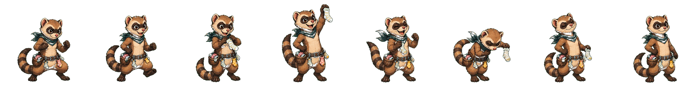
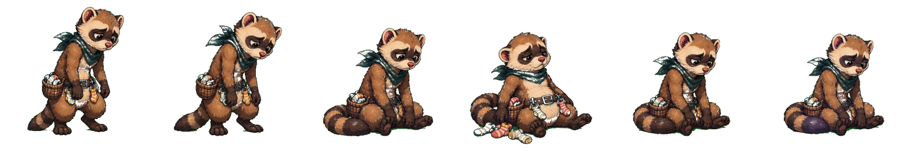

Accepted win candidate 01 and lose candidate 02. This row-generation pass is source-only, no-size-drift, and not playable.


assets/source/imagegen/fighters/ferret-noodle/win.png is exact 2048x256 with alpha.
assets/source/imagegen/fighters/ferret-noodle/lose.png is exact 1536x256 with alpha.
public/assets/generated/fighters/ferret-noodle remains absent, so Noodle Nibbles remains not playable.